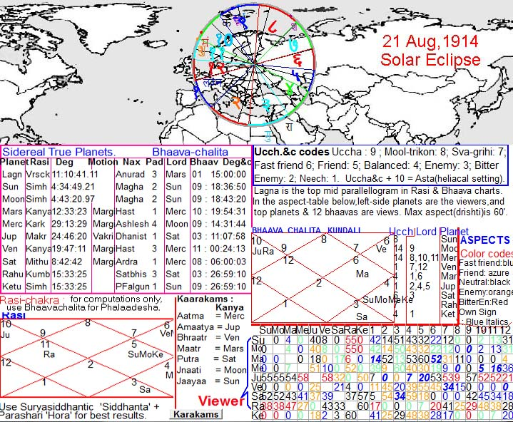

|
Table of Contents
|
Geographical Distribution of 4014 Years of Non-Partial Solar Eclipses
Using the Drik mode (modern physical astronomy based on NASA's JPL data through Sweph of Astrodienst) of Kundalee Software, the centres of maximum solar eclipse, excluding partial, have been programmatically plotted on world map to show the regional distribution of solar eclipses during long periods of history, beginning from onset of 2000 BC to end of 2013 AD are shown in the map below. The most important point is that most of the clipses do not occur uniformly on all latitudes.
EclipsesNonPartial-2000 BC-to-2013-end]
{kind=link}
Frequency Distribution of Non-Partial Solar Eclipses According to Latitudes
Frequency Distribution of Non-Partial Solar Eclipses According to Latitudes
{kind=link}
Eclipses In India : 2000 BC to 2013 AD
{kind=link}
Number of Solar Eclipses
Total number of solar eclipses in exactly 100,000 during one Drik epoch of 42000 years. The path of any particular solar eclipse on the globe is called LOXODROME in higher mathematics and modern astronomy. Loxodrome is a 3-D space curve moving obliquely with respect to latitudes. As time progresses, the centre of maximum eclipse moves along a loxodrome. Geographical locations of loxodromes of different eclipses are different. Although loxodrome is a modern term, its nearest Sanskrit term is Lakshadruma : which means a vine-like creeper with one lakh eclipses (in 42000 years of one Drik Khandakalpa). 42000-year cycle is a highly complicated topic discussed in another article briefly.
Astrological Significance of Solar Eclipses
It is only a summary. Each eclipse can be studied in detail, esp with reference to its horoscope drawn at the moment of a local eclipse. Global impact of a solar eclipse should be studied from the horoscope drawn at the place and moment of maximum eclipse on the globe.
Case Study of Eclipse in 1914 : Influence on World War-1
Following picture is the screenshot of D-1 bhaavachalita and Rasi charts of Kundalee Software (SSS mode) for total solar eclipse on 21rst Aug 1914 at the place of maximum obscuration of solar disc which was slightly north of Minsk(the capital of Belorus), and slightly east of Vilnius(the capital of Lithuania). In bhaavachalita chart, Sun and Rahu are most malefic planets because the signs (rasis) owned by them do not occupy middle of any bhaava, such planets are bhaavaheena. Planets related to them through conjunction or aspect get the malefic traits too. Moon and mercury are worst affected by bhaavaheena Sun because they are combust. Jupiter and Venus are neecha (debilitated) while Saturn is 3L sitting in 8H, hence highly malefic. Mars seems to be the only planet which is not too bad, although it is also malefic by dint of being 6L and its lord is combust Mercury. But Mars is highly malefic in divisionals related to war and death or diseases, such as D30 in which Mars sits in 7H as 3L + 8L with maarakesh Venus. In D30, Sun is exalted in 8H with 11L Moon, which increases its malefic trait. In D9 too, Sun and Moon sit in 6H and mercury sits in 8H, Saturn is 2L + 3L while Venus is 6L + 11L. In D9, Jupiter is the only planet with benefic traits : 1L + 4L but it sits in 3H with 3L Rahu and lorded by killer Saturn D27 is highly significant in War because it decides strengths and weaknesses (balaabala). Its SBC (Sarvato-bhadra chakra) has both Germany and Britaing having vedha from yoga giver Saturn as 9L + sitting in lagna, but Britain is stronger because it has vedha from moola-trikona Sun in 4H which has vedha on its friend USA too.
D1 bhaavachalita on map : 12H is owned by neecha Venus which sits in 11H. Most of Germany,Northern France and UK fell in 12H. In this way, other houses and regions in them can be discerned in the map. All houses are malefic, hence this eclipse is bad for all nations. But the Sun was in moola trikona and therefore possessed strong benefic traits too in spite of being bhaavaheena. In both D1 and D27 it had vedha on UK anf its friend USA (America). Hence, outcome was titled in favour of allies of UK in spite of the War ending in a treaty.
World War-1 began on 28th July, 24 days before the aforementioned solar eclipse. But the previous eclipse of 25-2-1914 occurred in South pacific (113.07 W, 62.04 S) and was almost ineffective for Europe. The August-1914 eclipse had its focus in the war zone and was a total eclipse, and its horoscope was highly malignant too. Hence, this eclipse appears to have a profound bearing on the war and accompanying epidemics (influenza) which killed many crores of humans. Most conservative estimates put the number of killed at 15 millions, excluding those killed by epidemics. Liberal estimates, including epidemic deaths, put the tolls at 65 million killed.
-VJ